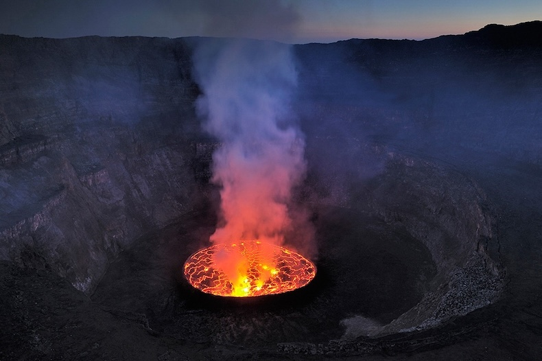

Lava Lakes of the World

Credit: Olivier Grunewald/Boston.com
What is a Lava Lake?
A lava lake is a body of molten lava which has a persistent, semi permanent exposure that is viewable from Earth's surface. They are primarily formed within volcanic craters, broad depressions on Earth's crust such as the Great Rift Valley in Africa, or as a result of a mantle plume brewing deep beneath our feet.
While many volcanoes are scattered throughout the globe, there are far fewer permanent lava lakes. This site will help you navigate the seven lava lakes that are agreed upon within the scientific community, although others are debated and some are still being discovered.